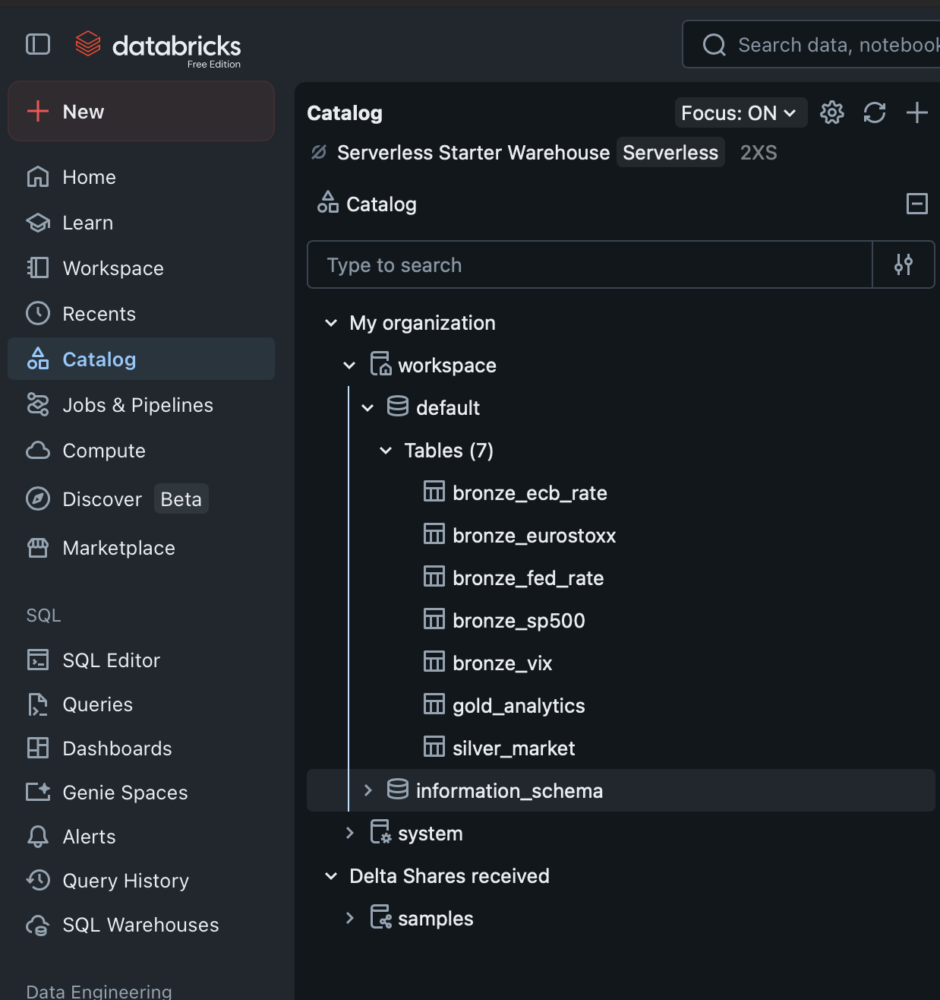
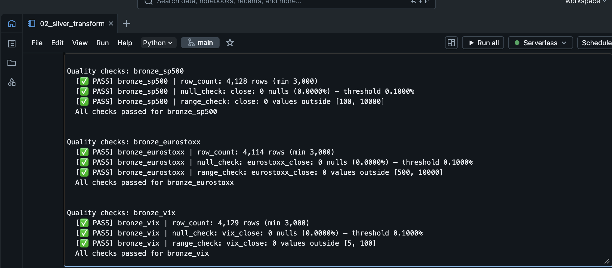
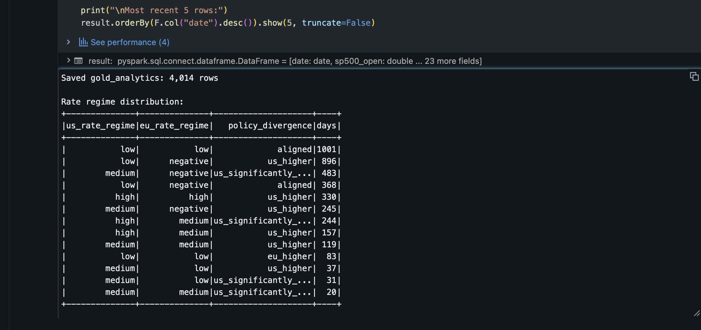
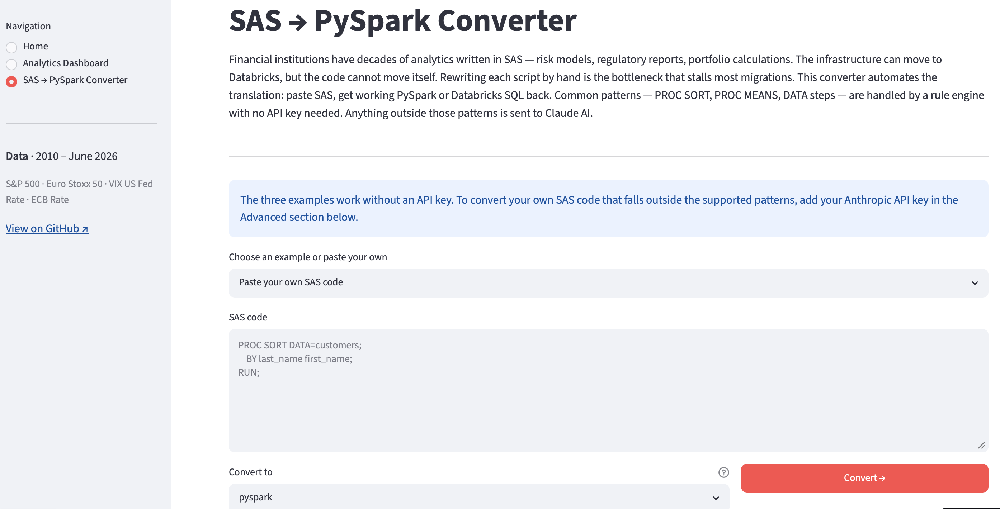
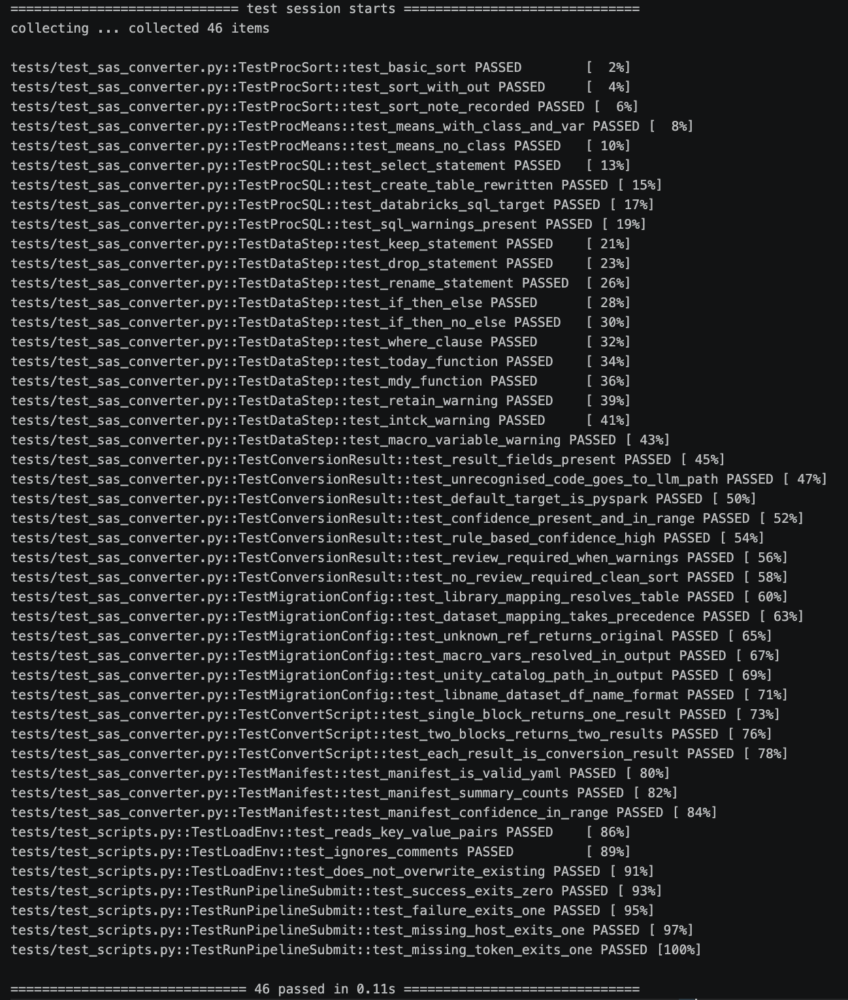
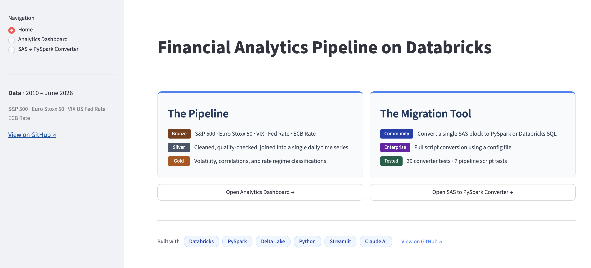
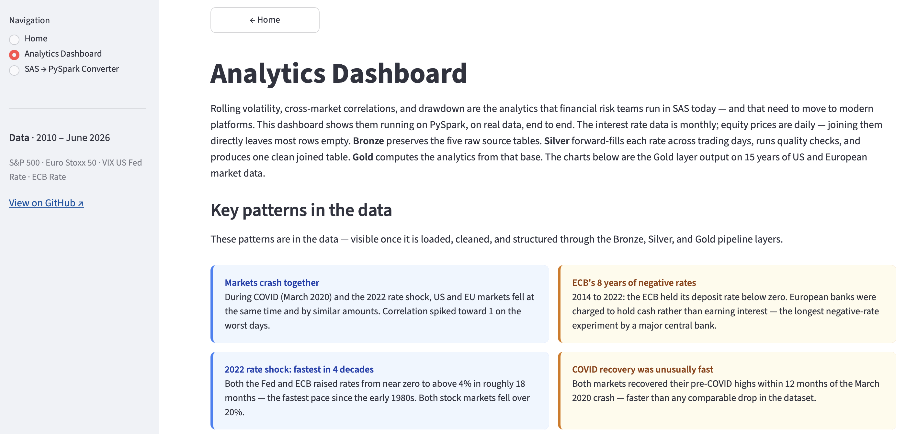

Financial institutions have been running market analytics in SAS for decades. Moving to a modern data platform means replacing both the infrastructure and the legacy code. This project builds both — as a personal exploration outside work, on real data: a Databricks medallion pipeline on 15 years of US and European market data, and a tool that converts legacy SAS analytics code to PySpark or Databricks SQL automatically.
The pipeline covers five data series — S&P 500, Euro Stoxx 50, VIX (a measure of market uncertainty), US Federal Funds Rate, and ECB (European Central Bank) Deposit Facility Rate — across three Delta Lake layers (Bronze, Silver, Gold), and serves the results through an interactive Streamlit dashboard. The ECB rate turned negative in 2014 and stayed there until 2022 — a regime the US never entered, which appears clearly in the regime classifications. The converter handles the code side: paste legacy SAS, get working PySpark or Databricks SQL back.
Live dashboard ↗ · GitHub ↗ · Medium ↗
Data flows through three Delta Lake layers, each with a distinct role:
The separation matters because of a data alignment problem: interest rates are monthly, equity prices are daily. A standard date join leaves the rate column empty for roughly 20 out of every 21 rows. Silver solves this once, in a single tested transformation, and every downstream calculation reads from the same aligned source.
Bronze preserves source observations exactly as received — if a cleaning rule changes in Silver, the full history re-derives from Bronze without calling the original APIs again. Quality checks run at each layer transition and halt the pipeline immediately on any failure. In SAS, ingestion, cleaning, and business logic typically share one script with no clean boundary between them; the medallion architecture makes each step explicit and independently testable.

In a SAS script, this join would sit alongside the ingestion, cleaning, and analytics in the same file — handled implicitly, with no separation between the data preparation and the business logic that depends on it. The medallion architecture makes it explicit: Silver owns the join, solves it once, and every downstream calculation reads from the same aligned source.
The Fed Funds Rate and ECB rate are published monthly; equity data is daily. A standard date join leaves most rows null because the rate observation dates rarely fall on trading days. The Silver layer resolves this with a two-pass window function: first a forward-fill to carry each rate reading forward through subsequent trading days, then a backward-fill to handle the initial days at the start of the series before the first rate observation date.
fill_window = Window.orderBy("date").rowsBetween(
Window.unboundedPreceding, Window.currentRow
)
back_window = Window.orderBy("date").rowsBetween(
Window.currentRow, Window.unboundedFollowing
)
joined = daily_df.join(monthly_df, on="date", how="left")
filled = (
joined
.withColumn("fed_rate",
F.last(F.col("fed_rate"), ignorenulls=True).over(fill_window))
.withColumn("fed_rate",
F.first(F.col("fed_rate"), ignorenulls=True).over(back_window))
)
Each trading day carries the rate in effect on that day — a point-in-time join with no lookahead bias.

Gold computes the financial analytics: rolling realised volatility at 20-day and 60-day windows (annualised), 60-day rolling Pearson correlation between US and EU equity returns, S&P 500 % decline from its 52-week high, and rate regime classifications for both central banks. A financial analyst opening the dashboard gets these answers directly, with no further calculation needed.
Regime classifications use threshold rules calibrated to the 2010–present rate environment. The ECB rate turned negative in 2014 and stayed there until 2022, a regime the US never entered, so the EU classification includes a negative band that has no equivalent on the US side. Each pipeline run appends a record to a pipeline_run_log Delta table: stage, table name, rows written, date range covered, and timestamp. Delta Lake records every write as a new version, so any prior state of gold_analytics can be queried with VERSION AS OF or TIMESTAMP AS OF.

Moving the infrastructure to Databricks is the easier half of a migration. The harder half is the code: financial institutions have decades of SAS scripts covering risk models, regulatory reports, and portfolio calculations. Rewriting each one by hand is the bottleneck that impedes most migrations. This converter automates the translation. Common SAS patterns — PROC SORT, PROC MEANS, PROC SQL, DATA steps with KEEP, DROP, RENAME, WHERE, IF-THEN-ELSE, and date functions — are handled by a rule engine: the same input always produces the same output, no API key required. SAS code the rule engine does not recognise is sent to Claude AI, which converts it and adds a note on anything that needs a human check.
The converter has two modes. Community mode converts a single SAS block. Enterprise mode adds a config file (YAML) that maps SAS library names and variable references to Databricks table paths, converts a full multi-block script in one pass, scores each block by confidence, and produces a YAML summary of each block — how it was converted, its confidence score, and anything that needs a manual check. Both the converted code and the summary are downloadable.

The converter is tested with 39 pytest cases covering every supported SAS construct — sort, aggregation, SQL, conditional logic, date functions, and constructs like RETAIN that cannot be translated mechanically and raise a warning instead — as well as confidence scoring, Enterprise mode config file support, multi-block script conversion, and YAML summary generation. A further 7 tests cover the pipeline script — credential loading, correct exit codes, and job status handling. The pipeline notebooks are validated on Databricks through quality checks at every layer transition, which halt the pipeline immediately if row counts, nulls, ranges, or duplicates fall outside expected bounds.

This project runs on Databricks Community Edition — a free tier that includes standard Delta Lake and classic compute. The architecture is designed to be production-ready; moving to a full workspace is a configuration change, not a rewrite.
| Feature | Community Edition (this project) | Full Databricks workspace |
|---|---|---|
| Data governance | Hive Metastore, table-level only | Unity Catalog — column-level security, data lineage, three-level naming (trading.bronze.sp500) |
| Pipeline definition | Manual notebook execution, explicit writes, quality check function calls | Delta Live Tables — declarative, @dlt.expect quality rules, auto-scaling, dependency graph inferred automatically |
| Ingestion | Batch CSV files synced via Repos | Auto Loader — incremental, schema inference, handles late-arriving files automatically |
| Orchestration | Polling script (run_pipeline.py) |
Databricks Jobs — dependency graph, retry logic, alerts, schedule |
| Dashboard hosting | Streamlit Community Cloud | Databricks Apps — hosted inside the workspace, workspace authentication |
The most visible change at the pipeline level is Delta Live Tables. The Bronze notebook currently writes each table explicitly and calls a quality check function. In a full workspace, both collapse into a declarative definition:
# Community Edition — explicit write + quality check function
run_quality_checks(sp500_df, "bronze_sp500", min_rows=3000, null_cols=["close"])
sp500_df.write.format("delta").mode("overwrite").saveAsTable("bronze_sp500")
# Full Databricks — Delta Live Tables
import dlt
@dlt.table(name="bronze_sp500")
@dlt.expect_or_fail("valid_close", "close IS NOT NULL")
@dlt.expect_or_fail("sufficient_rows", "COUNT(*) > 3000")
def bronze_sp500():
return (
spark.read.csv(f"{DATA_DIR}/sp500.csv", header=True)
.withColumn("date", F.col("date").cast(DateType()))
.withColumn("close", F.col("close").cast(DoubleType()))
.withColumn("ingested_at", F.current_timestamp())
)
Quality checks become @dlt.expect decorators, the write is implicit, and the dependency graph is inferred automatically from dlt.read() calls — Silver reads from Bronze and Gold reads from Silver, so execution order and scaling are handled by the framework rather than the notebook.
This project was built with Claude Code (Anthropic’s AI coding assistant) as a development collaborator — used for architecture decisions, the quality checks module, the converter’s rule engine design, and iterative review across all three pipeline layers. The SAS → PySpark converter’s Claude AI fallback uses the same capability in a production context: where AI assistance accelerated the engineering work, the converter deploys it to automate code migration at scale. The project demonstrates both uses of LLMs in data engineering — as a development tool and as a deployed feature.
The dashboard is the end-to-end proof that the migration works. Rolling volatility, correlations, and rate regime classifications are shown here running correctly in PySpark, reading live from the Gold Delta table on Databricks. No local data files. No intermediate exports.

The Analytics Dashboard opens with what the pipeline found: US and EU markets fall together in crises; the ECB held rates below zero for eight years while the US did not; 2022 saw the fastest rate rises in four decades; COVID markets recovered their pre-crash highs within 12 months. These are the outputs of the Bronze → Silver → Gold pipeline on 15 years of real data — not inputs, not assumptions. Interactive charts let the reader filter to any period and see the same patterns in the underlying data.

Taken together, the pipeline and the converter address both sides of a migration: building the new infrastructure on Databricks, and moving the existing code to it.